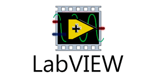
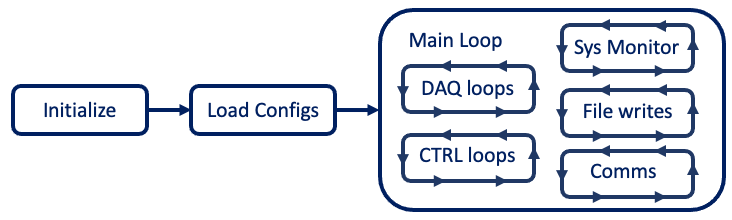

MODAQ Software Architecture

Many of the following topics are discussed in detail in the Technical Reference section of this document.
The primary controller software for MODAQ:Field is written in National Instruments LabVIEW. With its long history in the industrial testing sector, LabVIEW is known for stability, performance, and ease of rapid software development. MODAQ:Field leverages the power of LabVIEW to enable advanced software features that would be considerably more difficult to implement in other programming environments.
Depending on the design specification, some MODAQ:Field features may be implemented in the onboard FPGA chip, however MODAQ:Field's core functionality is run on the cRIO's Real-Time Linux target. Two versions of the MODAQ:RD software are included in this repository: FPGA and DAQmx. While both have similar functionality, hardware support, and general programming logic, these are the primary differences:
- FPGA - This version implements some functions in the FPGA, in particular the RS232, GPS timekeeper, and voltage input modules. Using this version requires a licensed copy of the FPGA Module addon.
- DAQmx - This version contains no FPGA code and does not require the FPGA Module addon license, however it will only work on newer cRIO hardware (those that have model numbers NI-904x and NI-905x). Further, the GPS timekeeper can only be implemented in FPGA, so that has been deleted from this version. However, there is a much better solution for precision time keeping and synchronization as discussed here.
Modularity
The modularity of MODAQ:Field is realized in the software architecture where functionality can added/removed from MODAQ:Field to provide the required features. Modules, called subVIs1 in LabVIEW, are used in MODAQ:Field to encapsulate functions such as reading a sensor or writing data to a binary file.

Multitasking
MODAQ:Field makes extensive use of LabVIEW's multitasking capability, with most processes running in its own concurrent task. Each of these processes can have independent timing (loop or sample rates) or be synchronized to a common source. In addition, prioritization can be enforced to assure determinism for critical tasks.
Timing and Synchronization
MODAQ:Field is highly performant- even with complex designs. Much care goes into assuring data are timestamped to a reliable reference and samples are tightly synchronized. For very demanding applications, specialized hardware and programming considerations may be necessary to achieve expected performance. See Timing and Synchronization section in the Technical Reference section for more detail.
Interprocess Communications
While tasks are run as individual parallel processes, MODAQ provides several mechanisms to allow for interprocess communications. These mechanisms fall into the following categories:
- Blocking - process waits for message/data. This is usually the case for a "consumer" loop, which acts on an output from another "producer" task.
- Broadcast - A signal or flag that may be actioned by one or more tasks.
- Messaging - A common buss for passing formatted messages, such as log events and email alerts.
Control and Automation
MODAQ:Field can include hardware output modules and perform control actions. These can be simple if-then type rules, PID, or very complex state machines. Since controlling external things is highly dependent on individual project requirements, control features are not included in the MODAQ:RD distribution.
While MODAQ:Field can perform complex control operations similar to a SCADA, MODAQ:Field systems furnished by NREL are not intended to be the MRE device's primary control system. This is partly due to liability concerns, but mostly because the control system is responsible for the performance and character of the device and usually involves proprietary or uniquely specialized algorithms. Users who choose to leverage the MODAQ reference design independently are free to extend the code as they feel fit. Examples of MODAQ control logic are available upon request or see this document regarding MODAQ SCADA for Columbia Power.
QC and Threshold Monitoring
Any data channel within MODAQ:Field can be piped through basic quality control screening, with violations flagged for later action. Unless there's a compelling reason to do QC screening onboard, it is recommended to screen the data once uploaded to MODAQ:Cloud, since onboard screening increases the file sizes and can impact performance. Instead (or in addition to), MODAQ:Field can be configured to monitor thresholds and/or apply simple rules to acquired data and write violations to a log file and/or send an email alert.
Execution
MODAQ:Field runs "headless"2 on the real-time Linux target on the cRIO hardware as a compiled executable, however it can also be run in an interactive mode3 which is useful for debugging and laboratory/bench testing. Since interactive mode can be processor and bandwidth intensive, it's not recommended for production/field applications. If interactivity or near real time monitoring is desired, consider the available HMI or MODAQ:Web options.
Configuration
MODAQ:RD includes an offline configuration utility for setting values, such as thresholds, scaling factors, and channel names and to set operational preferences. The Configurator generates an XML document of the settings that is loaded when MODAQ:RD starts. Since it's a plain text XML file, quick changes to contents can be done outside of the Configurator in any text editing app.
Data Destinations
While MODAQ:Field could save data in most common formats, TDMS is the format supported by MODAQ for most data save operations. TDMS is a binary format that was developed by National Instruments and there are plugins or libraries available to read TDMS in MS Excel, Matlab, and Python. TDMS is also supported by MODAQ:Cloud and MHKiT.
In addition to TDMS, MODAQ:Field can also create summary files, which are CSV text files that contain select downsampled measurement data and system status. Summary files are ideal for sending data to monitor a deployment over a bandwidth-constrained internet connection. They can also be ingested in MODAQ:Web for an operational monitoring dashboard.
Communications
MODAQ:Field can be configured for a variety of communications pathways, including cellular, WIFI, ethernet, and fiber optic. Users can configure which files to upload based on available bandwidth and data charges.
HMI
While there are a few ways to implement an HMI in LabVIEW, MODAQ:RD leverages the G Web Development Software (formerly LabVIEW NXG Web Module) and web server support on the cRIO to build HMIs that can be displayed in a standard web browser. To access the HMI, clients need to be on the same network as MODAQ:Field. A simple implementation of the MODAQ:Field HMI is included with the MODAQ:RD source code. Minor changes of the HMI could be accomplished by modifying the HTML or JavaScript files, however a G Web Development license will be necessary for more extensive changes.
Remote Supervision
MODAQ:Field can be equipped with a network gateway that includes an OpenVPN server. Assuming sufficient bandwidth, operators can connect to MODAQ to perform remote maintenance, upload new code, change configuration settings, view the HMI, and download data files.
-
In LabVIEW, a "program" is called a VI or Virtual Instrument. If a VI is contained within a VI, it's known as a subVI. This is similar to a function in other languages. The use of subVIs is a way to simplify the appearance of the application's block diagram (which itself is the source code view of the app) and encapsulating functional elements for modularity and reuse. ↩
-
Headless Mode: Also known as embedded mode- there is no directly connected display or keyboard/mouse. MODAQ:Field is run as an executable, with all Graphical User Interface (GUI) elements excluded at compile time. This mode provides the best performance. ↩
-
Interactive Mode: LabVIEW makes it very easy to create a GUI, complete with plots, live updating indicators, and interactive controls. However, these can result in a performance hit, particularly if a lot of data are streamed to the GUI elements. There are ways to minimize these impacts, but deployments should done in Headless Mode. ↩